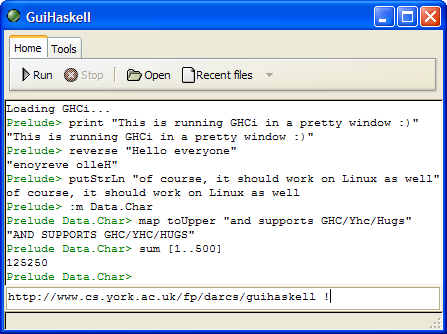
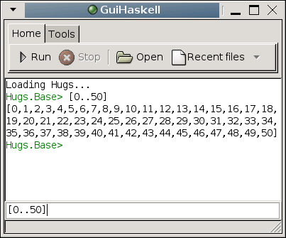

Warning: This project is fragile, unfinished, and I do not recommend that anyone tries using it. Give me a few months at least. Some functionality which has still not been finished includes loading files and executing commands :)
I am writing a GUI to vaious Haskell implementations (Hugs, GHCi, Yhc) for all platforms, called GuiHaskell. It is written in Haskell, using Gtk2Hs.
Note that GuiHaskell requires [[proplang]], an as yet entirely undocumented side project of mine.
 